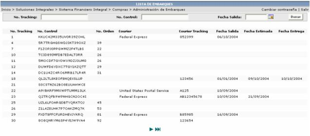
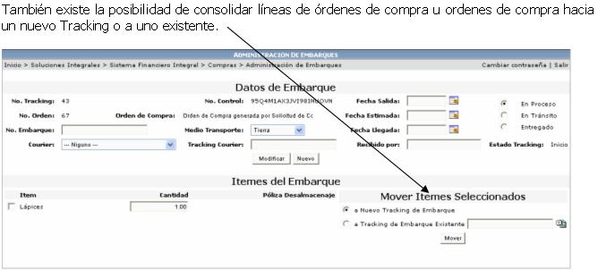

Los registros que aquí se muestran son los que se generan automáticamente de una orden de compra que tenga especificado, la generación de Tracking, o cuando se aplica un registro de la opción Generación de Embarques por OC.

Aquí se debe de especificar cierta información como la fecha de salida de la mercadería, la fecha en la que se estima que llegue, el número de embarque, el medio de trasporte por donde llegará la mercadería, seleccionar si esta en proceso en tránsito o ya fue entregada (si ya fue entregada, no se desplegará en la lista de Seguimiento de Tracking), el courier, si aplica, y la persona que lo recibió.
